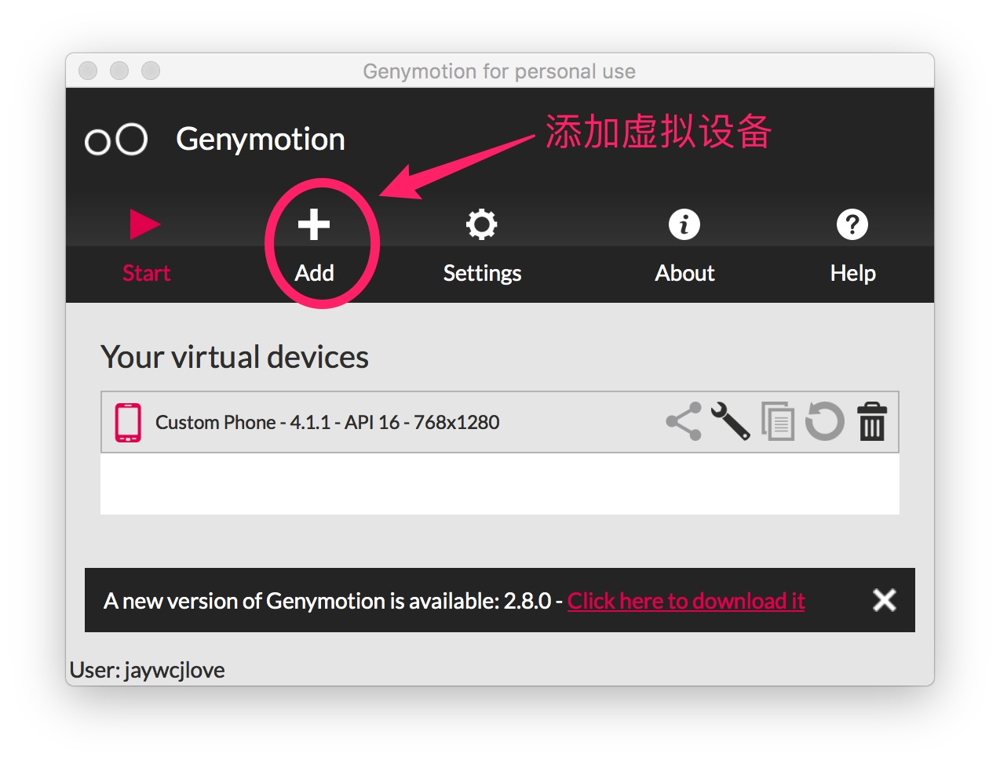
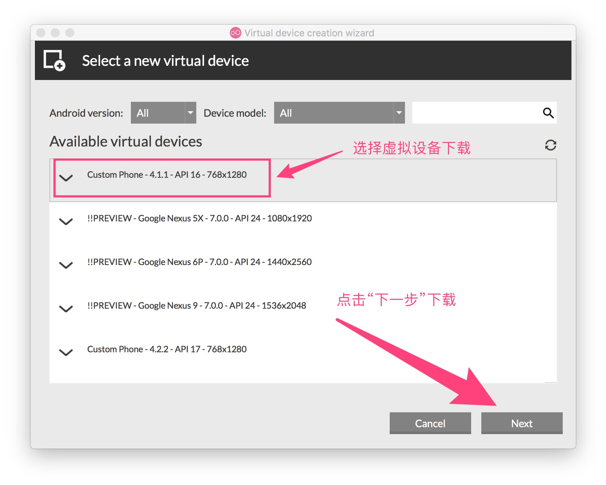
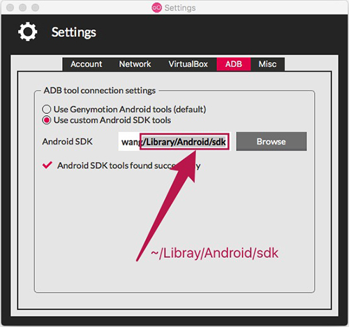
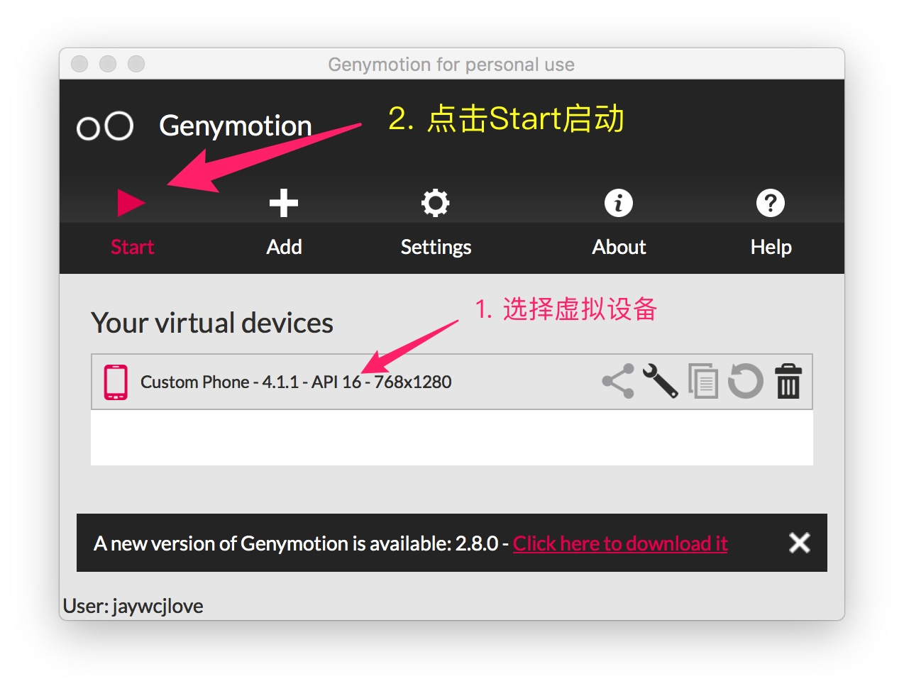

![handbook logo]() handbook
handbook
handbook
handbook
handbook
handbook
Homebrew是Mac OSX的包管理器，我们需要通过Homebrew安装开发React Native的相关软件包。 如果不知道怎样安装Homebrew可以点这里：官网。根据官网的介绍安装即可。
$ brew install node
watchman是Facebook用于监视JavaScript文件改动的开源项目。
$ brew install watchman
flow是Facebook开源的一个JavaScript静态类型检查器，用于发现JavaScript程序中的类型错误。
$ brew install flow
react-native-cli是React Native的命令行工具，安装react-native-cli后我们就能够通过react-native相关命令管理ReactNative工程。
$ npm install -g react-native-cli
相对于Android环境搭建，iOS简单太多了，太easy了！在基础环境安装成功之后，只需去Mac App Store下载Xcode，并安装Xcode即可，首次安装需要打开Xcode初始化。在初始化项目好之后，只需在项目根目录运行下面命令即可：
$ react-native run-ios`
在Android环境，比较难搞，按照步骤安装即可，不要放过任何步骤哦。
javac -versionPerformance和Android Virtual DeviceSDK Platforms ，记得勾选Show Package DetailsSDK Tools 必须是这个版本 Android SDK Build-Tools 23.0.1，记得勾选Show Package Details。你可以把Android SDK的tools和platform-tools目录添加到PATH变量中，以便在终端中运行一些Android工具，例如android avd或是adb logcat等。
在~/.bash_profile中添加(如果你安装的 ZSH 则在 ~/.zshrc中添加)：
PATH="~/Library/Android/sdk/tools:~/Library/Android/sdk/platform-tools:${PATH}"
export PATH=$HOME/bin:/usr/local/bin:$PATH
export ANDROID_HOME=~/Library/Android/sdk
export PATH=${PATH}:${ANDROID_HOME}/tools
改完需要运行source ~/.bash_profile
（注意：你的SDK的具体路径可能不同）
这时候可以用浏览器访问
http://localhost:8081/index.android.bundle?platform=android
如果可以访问表示服务器端已经可以了。
在应用中登录，点击按钮Add下载模拟器设备，在Setting中设置ADB选择User custom Android SDK tools.填写地址，一般在目录/Users/用户名/Library/Android/sdk中，点击按钮Start启动模拟器
 
在启动前需要设置ADB SDK，否则会报错 error: could not install smartsocket listener: Address already in use，解决方法：genymotion的adb设置Android sdk。如下图：
 
进入项目的根目录，也就是有package.json文件的目录，运行react-native run-android启动项目，如下动图：

Could not run adb reverse: Command failed: ~/Library/Android/sdk/platform-tools/adb reverse tcp:8081 tcp:8081
在Android环境下运行，会报下面错误，原因是没有连接手机会报如下错，开发阶段可忽视
解决方法：修改build.gradle的版本，com.android.tools.build:gradle:2.1.0，改为更高的，然后更改gradle/wrapper/gradle-wrapper.properties中相应的gradle-2.10-all.zip。
解决方法：I ran in to this issue as well, and the solution @charpeni proposed solved the issue. To be clear for others, if you are upgrading to 0.26+ then you need to make the following changes.
In ios/YourProject.xcodeproj/project.pbxproj, look for the two lines like OTHER_LDFLAGS = "-ObjC";. Replace them with the following:
OTHER_LDFLAGS = (
"-ObjC",
"-lc++",
);
解决方法：修改build.gradle的版本，com.android.tools.build:gradle:2.1.0，改为更高的，然后更改gradle/wrapper/gradle-wrapper.properties中相应的gradle-2.10-all.zip。
~/Learning/ReactNative/AwesomeProject: react-native run-ios
Found Xcode project AwesomeProject.xcodeproj
xcrun: error: unable to find utility "instruments", not a developer tool or in PATH
Command failed: xcrun instruments -s
xcrun: error: unable to find utility "instruments", not a developer tool or in PATH
输入sudo xcode-select -s /Applications/Xcode.app/Contents/Developer/然后就可以运行react-native run-ios了。
出现这种类似错误，只能升级Xcode咯。
这个报错在此文件中有两处，代码
SecRandomCopyBytes(kSecRandomDefault, sizeof(uint32_t), (uint8_t *)mask_key);
修改为
(void)SecRandomCopyBytes(kSecRandomDefault, sizeof(uint32_t), (uint8_t *)mask_key);
前面加上(void)。
@implementation RCTCustomScrollView{
__weak UIView *_dockedHeaderView;
RCTRefreshControl *_refreshControl; // 加入此行
}
错误信息
* What went wrong:
Execution failed for task ':react-native-update:compileReleaseNdk'.
> NDK not configured.
Download the NDK from http://developer.android.com/tools/sdk/ndk/.Then add ndk.dir=path/to/ndk in local.properties.
(On Windows, make sure you escape backslashes, e.g. C:\\ndk rather than C:\ndk)
解决方法：下载安装NDK和相关工具，菜单进入 Tools > Android > SDK Manager 在选项卡中选择 SDK Tools，选择 LLDB, CMake, 和 NDK 勾选，点击 Apply 进行下载安装。
1、卸载Android Studio，在终端(terminal)执行以下命令：
rm -rf /Applications/Android\ Studio.app
rm -rf ~/Library/Preferences/AndroidStudio*
rm -rf ~/Library/Application\ Support/AndroidStudio*
rm -rf ~/Library/Logs/AndroidStudio*
rm -rf ~/Library/Logs/AndroidStudio
rm -rf ~/Library/Caches/AndroidStudio*
2、删除Projects
rm -rf ~/AndroidStudioProjects
3、删除gradle
rm -rf ~/.gradle
4、卸载Android Virtual Devices(AVDs) and *.keystore.
rm -rf ~/.android
5、删除Android SDK Tools
rm -rf ~/Library/Android*